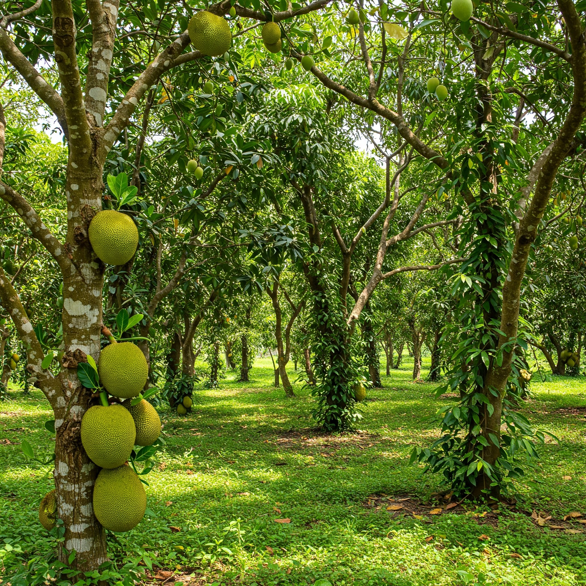

Building a Thriving Jackfruit, Mango, and Black Pepper Farm
A Comprehensive Plan for Sustainable Tropical Agriculture
Explore the PlanIntroduction
Establishing a farm or orchard with Jackfruit trees, Mango trees, and Black Pepper vines offers a sustainable and profitable venture, leveraging the high demand for these tropical crops. Jackfruit provides versatile fruit and timber, Mangoes are globally cherished for their flavor, and Black Pepper is a high-value spice with consistent market demand. Inspired by lush orchards like the one shown, this plan outlines how to start, implement, and maintain a mixed-crop farm that maximizes productivity, resource efficiency, and environmental harmony.
This guide assumes a 1-hectare (2.47-acre) plot in a tropical or subtropical climate (e.g., USDA Zones 10–11) with adequate rainfall (1000–2000 mm annually) and well-drained soil. By integrating these crops, farmers can diversify income streams, enhance soil health, and create a resilient agricultural system.
Planning the Farm
Successful farming begins with thorough planning. Below are key considerations for designing a Jackfruit, Mango, and Black Pepper farm:
1. Site Selection and Analysis
Choose a location suited to the crops’ needs, ensuring long-term viability.
- Climate: Jackfruit and Mango thrive in warm, humid conditions (25–35°C); Black Pepper prefers similar climates with partial shade.
- Soil: Well-drained, loamy soil with pH 5.5–7.0. Test soil for nutrients and amend with organic matter (e.g., compost).
- Water Access: Reliable irrigation source (e.g., well, drip system) for dry seasons.
- Topography: Flat or gently sloping land to prevent erosion and ease mechanization.
- Cost: $100–$500 for soil testing, water analysis, and initial surveys.
2. Crop Layout and Spacing
Optimize space by intercropping Black Pepper with Jackfruit and Mango trees, as shown in the lush orchard image.
- Jackfruit: Space trees 8–10 m apart (100 trees/ha). Use grafted varieties (e.g., J33, Tekam Yellow) for earlier fruiting (3–4 years).
- Mango: Space trees 6–8 m apart (200 trees/ha). Select varieties like Alphonso or Kent for market demand.
- Black Pepper: Plant vines on Jackfruit/Mango trunks or live supports (e.g., Gliricidia trees) at 2–3 m spacing (2000 vines/ha).
- Layout: Alternate Jackfruit and Mango rows, with Black Pepper vines on every other tree trunk to maximize sunlight and support.
- Cost: $2000–$4000 for saplings/vines (Jackfruit: $10/ea, Mango: $8/ea, Black Pepper: $0.5/ea).
3. Resource and Budget Planning
Estimate startup costs and resources for a 1-hectare farm.
- Land Preparation: Clearing, plowing, fencing ($1000–$2000).
- Irrigation: Drip irrigation system ($1500–$3000).
- Tools/Equipment: Shovels, pruning shears, sprayers ($500).
- Labor: 2–3 workers for planting/maintenance ($1000/month).
- Total Initial Cost: $6000–$11,000, depending on region and scale.
4. Market Research
Understand demand and distribution channels to ensure profitability.
- Jackfruit: Fresh fruit ($2–$5/kg), processed products (e.g., chips, jam).
- Mango: Fresh export ($1–$3/kg), local markets, or puree.
- Black Pepper: Dried peppercorns ($5–$10/kg, global spice trade).
- Channels: Local markets, exporters, cooperatives, or direct-to-consumer sales.
Implementation Guide
With planning complete, implement the farm in structured phases to ensure success.
Step 1: Land Preparation
- Clear weeds, rocks, and debris; plow to aerate soil.
- Amend soil with compost/manure (10 tons/ha) to boost fertility.
- Install fencing to protect against animals (e.g., deer, wild boar).
- Dig planting pits: 60x60x60 cm for Jackfruit/Mango, 30x30x30 cm for Black Pepper supports.
- Timeline: 1–2 months.
- Cost: $1000–$2000.
Step 2: Planting
- Jackfruit/Mango: Plant grafted saplings in rainy season (June–July) for root establishment. Add 5 kg compost per pit.
- Black Pepper: Plant rooted cuttings near tree trunks or Gliricidia supports, ensuring shade. Use 2 kg compost per vine.
- Stake trees/vines to prevent wind damage.
- Water immediately after planting (20 L/tree, 5 L/vine).
- Timeline: 1 month.
- Cost: $2000–$4000 for saplings/vines.
Step 3: Irrigation and Infrastructure
- Install drip irrigation with emitters at each tree/vine (1–2 L/hour).
- Set up a water storage tank (5000 L) or connect to a well/river.
- Create pathways for easy access during harvest/maintenance.
- Timeline: 1–2 months.
- Cost: $1500–$3000.
Step 4: Initial Care and Monitoring
- Water daily for first month (20 L/tree, 5 L/vine), then weekly if no rain.
- Apply mulch (e.g., straw, leaves) around plants to retain moisture.
- Monitor for pests (e.g., fruit borers for Jackfruit, anthracnose for Mango, wilt for Black Pepper) and diseases.
- Use organic fertilizers (e.g., vermicompost) every 3 months.
- Timeline: Ongoing, first 6 months critical.
- Cost: $500 for mulch, fertilizers.
Maintenance and Growth
Ongoing maintenance ensures healthy crops and consistent yields over time.
1. Crop-Specific Care
- Jackfruit:
- Prune dead branches annually to promote airflow.
- Harvest at 3–4 years (50–100 kg/tree/year).
- Protect fruit with bags to deter pests.
- Mango:
- Prune after harvest to shape canopy and remove suckers.
- Harvest at 3–5 years (20–50 kg/tree/year).
- Apply boron/zinc sprays for fruit set.
- Black Pepper:
- Train vines on supports, trimming excess growth.
- Harvest at 2–3 years (1–2 kg/vine/year).
- Use neem oil for fungal control.
2. Pest and Disease Management
- Monitor weekly for signs of pests (e.g., mealybugs, beetles) or diseases (e.g., powdery mildew, foot rot).
- Use integrated pest management (IPM): Introduce beneficial insects (e.g., ladybugs), apply organic sprays (e.g., neem oil).
- Rotate crops if expanding to prevent soil-borne diseases.
- Cost: $200–$500/year for organic pesticides.
3. Irrigation and Fertilization
- Maintain drip irrigation, checking emitters monthly for clogs.
- Fertilize quarterly: 10 kg compost/tree, 2 kg/vine, plus NPK (10:10:10) as needed.
- Adjust water based on season: 50 L/tree/week in dry months, 10 L/vine/week.
- Cost: $300–$600/year for fertilizers, water.
4. Harvesting and Marketing
- Jackfruit: Harvest when fruit turns yellowish (June–August). Sell fresh or process into products.
- Mango: Pick when mature but firm (May–July). Grade for export/local markets.
- Black Pepper: Harvest green berries for drying (October–February). Dry to 10% moisture for sale.
- Partner with cooperatives or online platforms for sales.
- Revenue Potential: $5000–$15,000/year after 4–5 years, based on yields and prices.
5. Technology Integration (Optional)
Leverage Raspberry Pi automation (as in the whitepaper) to enhance efficiency:
- Soil Monitoring: Use sensors to track moisture and optimize irrigation ($100–$200/setup).
- Irrigation Control: Automate with relays for water savings.
- Pest Detection: Deploy cameras with AI to spot diseases early.
Conclusion
Creating a farm with Jackfruit trees, Mango trees, and Black Pepper vines is a rewarding endeavor that combines profitability with sustainability. By carefully planning site selection, crop layout, and resources, implementing structured planting and infrastructure, and maintaining crops with diligent care, farmers can build a thriving orchard like the one pictured. Initial costs ($6000–$11,000) are offset by long-term yields, with potential revenues of $5000–$15,000 annually after 4–5 years.
Integrating technologies like Raspberry Pi automation can further enhance efficiency, reducing labor and resource waste. This plan offers a blueprint for farmers and agtech enthusiasts to cultivate a diverse, resilient farm that meets market demands while preserving the environment for future generations.